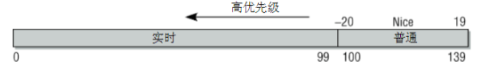
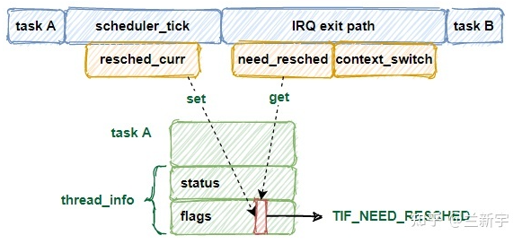
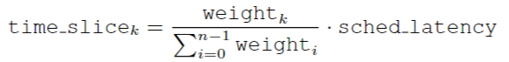
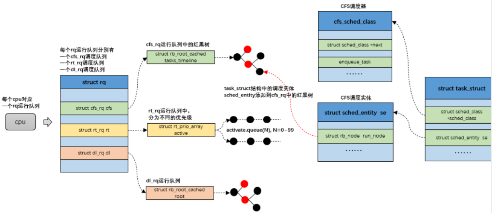
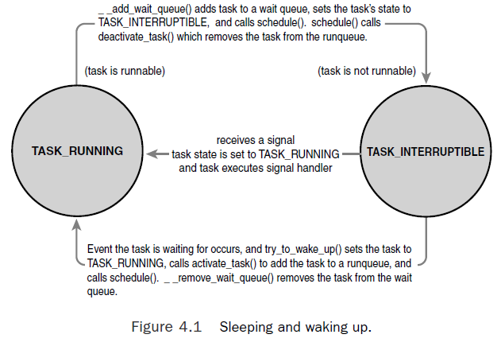
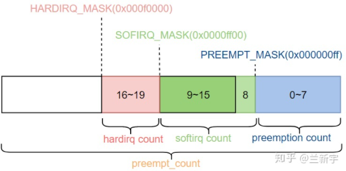
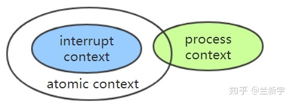

The scheduler is the kernel component that decides which runnable thread will be executed by the CPU next. The linux uses CFS (mainly for OTHER policy).
each thread has:
normal policy (SCHED_OTHER, SCHED_IDLE, SCHED_BATCH), priority is not used, always 0
real-time policy (SCHED_FIFO, SCHED_R), priority is 1 (low) to 99 (high)
Priority value is what kernel sees, ranges from 0 to 139
ps -eo rtprio, "-" means not real-time.
SCHED_FIFO - set with sched_setscheduler(2)
SCHED_RR (default 100ms slice)
SCHED_OTHER: Default Linux time-sharing scheduling
ps -el output)a value that can be specified in policy when calling sched_setscheduler(). If this flag is set, then children that are created by this process using fork() do not inherit privileged scheduling policies and priorities. If the calling process has a realtime scheduling policy (SCHED_RR or SCHED_FIFO), the child’s policy is reset to SCHED_OTHER. If the process has a negative (high) nice value, the child's nice value is reset to 0.
Cost ~1us (or more if without pinning process)
There are additional factors context switching time depends on; for example, on a multi-core CPU, the kernel can occasionally migrate a thread between cores because the core a thread has been previously using is occupied. While this helps utilize more cores, such switches cost more than staying on the same core (again, due to cache effects).
Context Switch Kernel Internal
Voluntary Switch
A voluntary context switch can occur whenever a thread/process makes a system call that blocks. (task's state is changed to INTERRUPTIBLE or UNINTERRUPTIBLE)
Involuntary Switch
the kernel switches the process out due to another processs with smaller vruntime. (task's state keeps in TASK_RUNNING)
Counting the switches:
task_struct as unsigned long nvcsw, nivcsw;. Kernel code counts them by checking if current process is in TASK_RUNNING state.sched_yield() or kernel calls cond_resched() or yield(). These cases all count towards nr_involuntary_switches because when they call schedule(), the process is still in TASK_RUNNING state.yield() is not recommended. From kernel comment: If you want to use yield() to wait for something, use wait_event(). If you want to use yield() to be 'nice' for others, use cond_resched(). If you still want to use yield(), do not!
Showing the count
/proc/<pid>/sched, shown as nr_voluntary_switches and nr_involuntary_switches/proc/<pid>/status, shown as voluntary_ctxt_switches and nonvoluntary_ctxt_switches也可以用 pidstat -w 命令查看进程切换的每秒统计值：
# pidstat -w 1
Linux 3.10.0-229.14.1.el7.x86_64 (bj71s060) 02/01/2018 _x86_64_ (2 CPU)
12:05:20 PM UID PID cswch/s nvcswch/s Command
12:05:21 PM 0 1299 0.94 0.00 httpd
12:05:21 PM 0 27687 0.94 0.00 pidstat
大致而言，如果一个进程的自愿切换占多数，意味着它对CPU资源的需求不高。如果一个进程的强制切换占多数，意味着对它来说CPU资源可能是个瓶颈，这里需要排除进程频繁调用sched_yield()导致强制切换的情况。
抢占(Preemption)是指内核强行切换正在CPU上运行的进程。发生抢占的原因主要有：进程的时间片用完了，或者优先级更高的进程来争夺CPU了。
抢占的过程分两步，第一步触发抢占，第二步执行抢占，这两步中间不一定是连续的，有些特殊情况下甚至会间隔相当长的时间：
TIF_NEED_RESCHED)，仅此而已，此时进程并没有切换。TIF_NEED_RESCHED标志并调用schedule()执行抢占。调度（任务切换）的发生要同时满足两个条件：能够调度（could）和需要调度（should）。前者由 per-CPU 的preempt_count 变量决定，即在 atomic 上下文(preempt_count != 1)不能执行调度。而后者取决于 TIF_NEED_RESCHED 标志位。该标志位被设定后，意味着当前有更值得（应该）运行的任务，当下一个调度时机出现时，就会检查这个标志位，并执行调度。
从标记调度，到真正执行调度，以 tick 时钟中断为例，一个简略的流程示意图大致如下：

时钟中断处理函数会调用scheduler_tick()，这是调度器核心层(scheduler core)的函数，它通过调度类(scheduling class)的task_tick方法 检查进程的时间片是否耗尽，如果耗尽则触发抢占：
当进程被唤醒的时候，如果优先级高于CPU上的当前进程，就会触发抢占。相应的内核代码中，try_to_wake_up()最终通过check_preempt_curr()检查是否触发抢占。
如果进程修改nice值导致优先级高于CPU上的当前进程，也会触发抢占。内核代码参见 set_user_nice()
在多CPU的系统上，进程调度器尽量使各个CPU之间的负载保持均衡，而负载均衡操作可能会需要触发抢占。比如CFS类在load_balance()中触发抢占.
The kernel can preempt a task running in the kernel as long as it does not hold a lock (lock count is maintained in prempt_count in each process's thread_info). When prempt_count is 0, kernel is said to be preemptible.
User preemption occurs when the kernel is about to return to user-space:
The Linux kernel is a fully preemptive kernel since v2.6.
具体取决于内核编译时的选项：
Kernel preemption can occur in below cases:
Refer to: http://linuxperf.com/?p=211
Linux, aiming to provide good interactive response and desktop performance, optimizes for process response (low latency), thus favoring I/O-bound processes over processor-bound processors. As we will see, this is done in a creative manner that does not neglect processor-bound processes.
In O(1) scheduler, each nice value maps to an alloted time slice. Eg. nice 0 maps to timeslice 100millisec, nice 1 maps to timeslice 95 millisec, ... , nice 18 to 10 millisec and nice 19 to 5 millisec. These creates couple problems:
Linux’s CFS scheduler, however, does not directly assign timeslices to processes. CFS assigns processes a proportion of the processor.
Instead of assigning each process a timeslice, CFS calculates how long a process should run as a function of the total number of runnable processes. CFS uses the nice value to weight the proportion of processor a process is to receive:
Each process then runs for a “timeslice” proportional to its weight divided by the total weight of all runnable threads.

If a newly runnable process has consumed a smaller proportion of the processor than the currently executing process, it runs immediately, preempting the current process. If not, it is scheduled to run at a later time.
CFS causes relative differences in nice values to have a much stronger effect. In the current implementation, each unit of difference in the nice values of two processes results in a factor of 1.25 in the degree to which the scheduler favors the higher priority process.
CFS Parameters
| 变量名 | 含义解释 | 初始值 | 启动后使用的值（前提条件: 4个CPU） |
|---|---|---|---|
| sched_latency | default的调度延迟（单位：ns） 6ms | 18ms | |
| sched_min_granularity | 进程的最小时间片 | 0.75ms | 2.25ms |
| sched_wakeup_granularity | 唤醒进程能够抢占当前进程的条件，也就是说唤醒进程与当前进程的vruntime之差要大于这个参数才能够抢占 | 1ms | 3ms |
| nr_latency | 在默认调度等待时间内能够调度的最大进程数 | 8 (sched_latency / sched_min_granularity) | same |
| sched_tunable_scaling | 根据CPU数量缩放相关变量值的方法 | SCHED_TUNABLESCALING_LOG | same |
| sched_child_runs_first | 创建子进程后，保证子进程会在父进程之前运行。 比较父进程和子进程的vruntime，若是父进程的vruntime更小，就对换父、子进程的vruntime |
Each per-CPU run-queue of type cfs_rq sorts sched_entity structures in a time-ordered fashion into a red-black tree (or 'rbtree' in Linux lingo), where the leftmost node is occupied by the entity that has received the least slice of execution time (vruntime, the key of rb-tree).
vruntime variable, it is measurement of runtime of a given process. It is updated periodically by the system timer and whenever a process becomes runnable or blocks. nice值为0的任务，vruntime增量等于实际物理时间，其他nice值的任务的vruntime，由实际时间乘以weight的比值得到（对应函数实现为"calc_delta_fair"）. Code in update_curr() in kernel/sched_fair.cvruntime.__pick_next_entity() in kernel/sched_fair.cenqueue_entity() and __enqueue_entity() in kernel/sched_fair.cdequeue_entity()Some points on vruntime
# echo NO_WAKEUP_PREEMPT > /sys/kernel/debug/sched_features
The main entry point into the process schedule is the function schedule(), defined in kernel/sched.c.
pick_next_task()
When task gets blocked, it marks itself as sleeping, puts itself on a wait queue, removes itself from the red-black tree of runnable, and calls schedule() to select a new process to execute.

Context switching, the switching from one runnable task to another, is handled by the
context_switch() function defined in kernel/sched.c.
schedule() when a new process has been selected to run.switch_mm(), which is declared in <asm/mmu_context.h>, to switch the virtual
memory mapping from the previous process’s to that of the new process.switch_to(), declared in <asm/system.h>, to switch the processor state from
the previous process’s to the current’s.
preempt_count本质上是一个per-CPU的32位变量，它在各种处理器架构下的存放位置和命名不尽相同，但其值都可以使用preempt_count()函数统一获取。It is defined in <include/linux/preempt.h>

preempt_count中的第16到19个bit表示hardirq count，它记录了进入hardirq/top half的嵌套次数. It is incremented by 1 in irq_enter() and decreased in irq_exit()。如果hardirq count的值为正数，说明现在正处于hardirq上下文中，代码中可借助in_irq()宏实现快速判断。Linux系统并不支持hardirq的嵌套执行，所以实际使用的只有1个bit。
#define hardirq_count() (preempt_count() & HARDIRQ_MASK)
#define in_irq() (hardirq_count())
preempt_count中的第8到15个bit表示softirq count，它记录了进入softirq的嵌套次数，如果softirq count的值为正数，说明现在正处于softirq上下文中。由于softirq在单个CPU上是不会嵌套执行的，实际只需要一个bit (bit 8). 在进程上下文中，为了防止进程被softirq所抢占，关闭/禁止softirq的次数，比如每使用一次local_bh_disable()，softirq count高7个bits(bit 9到bit 15)的值就会加1，local_bh_enable() will decrease it by 1。
#define softirq_count() (preempt_count() & SOFTIRQ_MASK)
#define in_softirq() (softirq_count())
Also refer to here
不管是hardirq上下文还是softirq上下文，都属于我们俗称的interrupt context。
在中断上下文中，调度是关闭的，不会发生进程的切换，这属于一种隐式的禁止调度，而在代码中，也可以使用preempt_disable()来显示地关闭调度，关闭次数由第0到7个bits组成的preemption count(注意不是preempt count)来记录。每使用一次preempt_disable()，preemption count的值就会加1，使用preempt_enable()则会让preemption count的值减1。preemption count占8个bits，因此一共可以表示最多256层调度关闭的嵌套。
处于中断上下文，或者显示地禁止了调度，preempt_count()的值都不为0，都不允许睡眠/调度的发生，这两种场景被统称为atomic上下文，可由in_atomic()宏给出判断。
#define in_atomic() (preempt_count() != 0)
中断上下文、进程上下文和atomic上下文的关系大概可以表示成这样：
